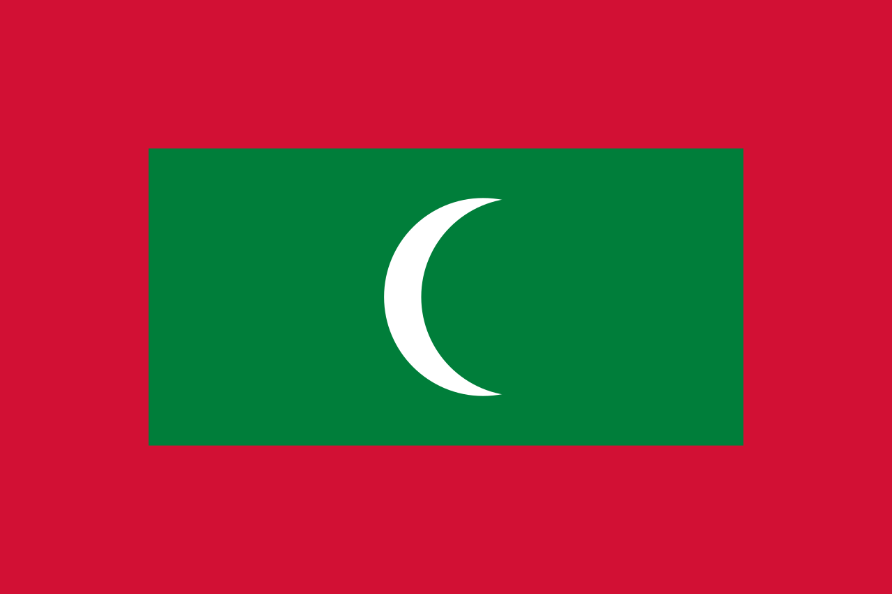
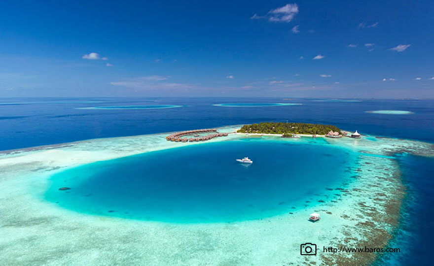
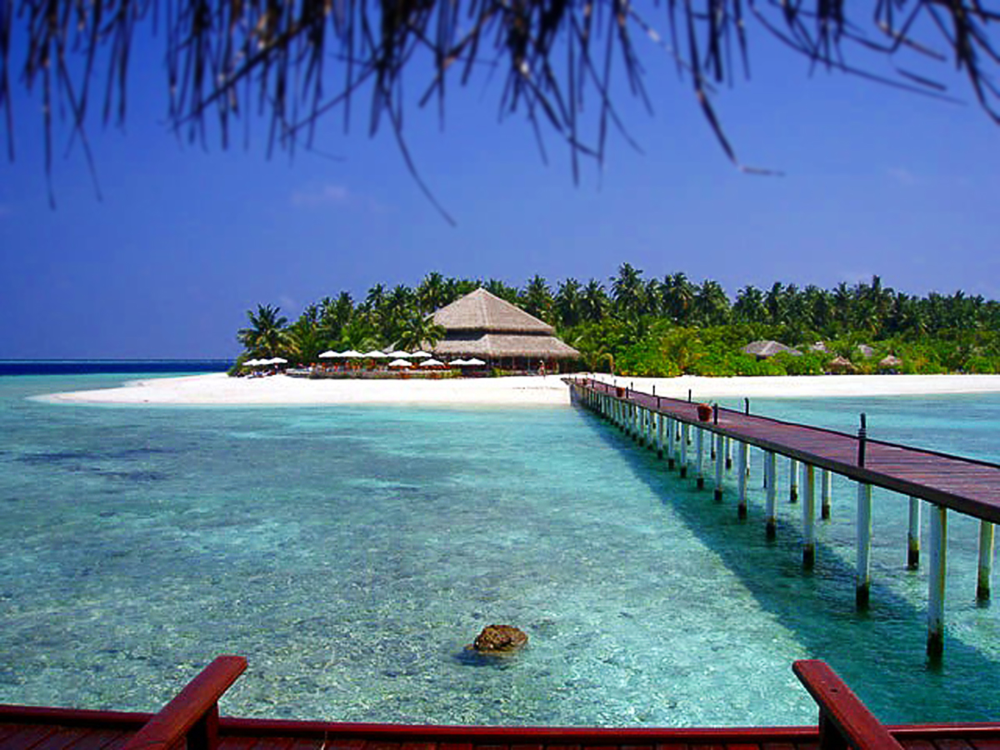
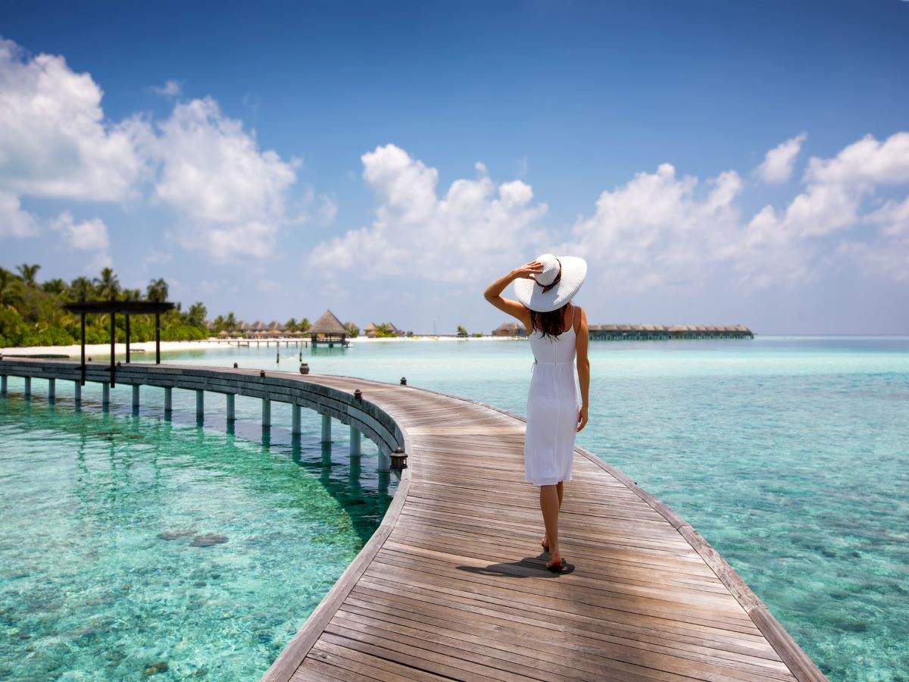

Discover the sunny side of
life at the blue beaches
Maldives |
|
|---|---|
|  | |
| Capital | Male |
| Official language | Dhivehi |
| Ethnic Groups | ≈100% Maldivians |
| Religion | Sunni Islam |
| Government | Unitary presidential constitutional republic |
| President | Ibrahim Mohamed Solih |
| Vice President | Faisal Naseem |
| Speaker of the Majlis | Mohamed Nasheed |
| Chief Justice | Ahmed Muthasim Adnan |
| Legislature | People's Majlis |
| Area | |
| Total | 300km 2 |
| Currency | Maldivian rufiyaa (MVR) United States dollar (USD, used in Maldivian resort islands) |
| Time Zone | UTC+5 (Maldives Time) |
| Date Format | dd/mm/yyyy |
| Mains electricity | 240 V–50 Hz |
| Driving side | left |
| Calling code | +960 |
The Maldives is a nation of islands in the Indian Ocean , that spans across the equator. The country is comprised of 1192 islands that stretch along a length of 871 kilometers. While the country covers an area of approximately 90,000 square kilometers, only 298 square kilometers of that is dry land. The islands are grouped into a double chain of 26 atolls. The country’s unique geography mesmerizes the visitor. Reefs that offer bands of color, tiny jewel-like islands rimmed with the whitest of soft sand surrounded by the clearest shallow waters that one can imagine. Only 200 of the islands are inhabited, and a select few on each of the atolls are resorts and some of the islands are used for industry and agriculture. The beauty of the Maldives is not only above the water. The Maldives is home to about five percent of the planet’s reefs that comes with an explosion of color contributed by soft and hard corals that form them. The reefs are home to a thousand species of fish. Lured by the rich nutrients that flow in with the currents, large pelagic fishes such as manta rays and whale sharks also make the Maldives their home.
The Maldives has a tropical monsoon climate (Am) under the Köppen climate classification, which is affected by the large landmass of South Asia to the north. Because the Maldives has the lowest elevation of any country in the world, the temperature is constantly hot and often humid. The presence of this landmass causes differential heating of land and water. These factors set off a rush of moisture-rich air from the Indian Ocean over South Asia, resulting in the southwest monsoon. Two seasons dominate Maldives' weather: the dry season associated with the winter northeastern monsoon and the rainy season associated with the southwest monsoon which brings strong winds and storms. The shift from the dry northeast monsoon to the moist southwest monsoon occurs during April and May. During this period, the southwest winds contribute to the formation of the southwest monsoon, which reaches Maldives at the beginning of June and lasts until the end of November. However, the weather patterns of Maldives do not always conform to the monsoon patterns of South Asia. The annual rainfall averages 254 centimetres (100 in) in the north and 381 centimetres (150 in) in the south. The monsoonal influence is greater in the north of the Maldives than in the south, more influenced by the equatorial currents. The average high temperature is 31.5 degrees Celsius and the average low temperature is 26.4 degrees Celsius.
| Climate data for Male | |||||||||||||
|---|---|---|---|---|---|---|---|---|---|---|---|---|---|
| Month | Jan | Feb | Mar | Apr | May | Jun | Jul | Aug | Sep | Oct | Nov | Dec | Year |
| Average high oC | 30.3 | 30.7 | 31.4 | 31.6 | 31.8 | 30.6 | 30.5 | 30.4 | 30.2 | 30.2 | 30.1 | 30.1 | 30.6 |
| Daily Mean oC | 28.0 | 28.3 | 28.9 | 29.2 | 28.8 | 28.3 | 28.2 | 28.0 | 27.8 | 27.7 | 27.8 | 27.8 | 28.2 |
| Average Low oC | 25.7 | 25.9 | 26.4 | 26.8 | 26.3 | 26.0 | 25.8 | 25.5 | 25.3 | 25.4 | 25.2 | 25.4 | 25.8 |
| Average rainfall mm | 114.2 | 38.1 | 73.9 | 122.5 | 218.9 | 167.3 | 149.9 | 175.5 | 199.0 | 194.2 | 231.1 | 216.8 | 1901.4 |
| Average precipitation days (>1mm) | 6 | 3 | 5 | 9 | 15 | 13 | 12 | 13 | 15 | 15 | 13 | 12 | 131 |
| Mean Monthly Sunshine Hours | 284.8 | 257.8 | 279.6 | 246.8 | 223.2 | 202.3 | 226.6 | 211.5 | 200.4 | 234.8 | 226.1 | 220.7 | 2778.2 |
Historically, the Maldives provided enormous quantities of cowry shells, an international currency of the early ages. From the 2nd century AD, the islands \were known as the 'Money Isles' by the Arabs.[126] Monetaria moneta were used for centuries as a currency in Africa, and huge amounts of Maldivian cowries were introduced into Africa by western nations during the period of slave trade.[127] The cowry is now the symbol of the Maldives Monetary Authority. In the early 1970s, the Maldives was one of the world's 20 poorest countries, with a population of 100,000. The economy at the time was largely dependent on fisheries and trading local goods such as coir rope, ambergris (Maavaharu), and coco de mer (Tavakkaashi) with neighbouring countries and East Asian countries. The Maldivian government began a largely successful economic reform programme in the 1980s, initiated by lifting import quotas and giving more opportunities to the private sector. At the time tourism sector which would play a significant role in the nation's development was at its infant stage. Agriculture and manufacturing continue to play lesser roles in the economy, constrained by the limited availability of cultivable land and the shortage of domestic labour.
The Maldives remained largely unknown to tourists until the early 1970s. Only 189 islands are home to its 447,137 inhabitants. The other islands are used entirely for economic purposes, of which tourism and agriculture are the most dominant. Tourism accounts for 28% of the GDP and more than 60% of the Maldives' foreign exchange receipts. Over 90% of government tax revenue comes from import duties and tourism-related taxes. The development of tourism fostered the overall growth of the country's economy. It created direct and indirect employment and income generation opportunities in other related industries. The first tourist resorts were opened in 1972 with Bandos Island Resort and Kurumba Village (the current name is Kurumba Maldives),[129] which transformed the Maldives economy. According to the Ministry of Tourism, the emergence of tourism in 1972 transformed the economy, moving rapidly from dependence on fisheries to tourism. In just three and a half decades, the industry became the main source of income. Tourism was also the country's biggest foreign currency earner and the single largest contributor to the GDP.
 Visitors to the Maldives do not need to apply for a visa pre-arrival, regardless of their country of origin, provided they have a valid passport, proof of onward travel, and the money to be self-sufficient while in the country. Most visitors arrive at Velana International Airport, on Hulhulé Island, adjacent to the capital Malé. The airport is served by flights to and from India, Sri Lanka, Doha, Dubai, Singapore, Istanbul, and major airports in South-East Asia, as well as charters from Europe. Gan Airport, on the southern atoll of Addu, also serves an international flight to Milan several times a week. British Airways offers direct flights to the Maldives around 2–3 times per week.
The largest ethnic group is Dhivehin, i.e. the Maldivians, native to the historic region of the Maldive Islands comprising today's Republic of Maldives and the island of Minicoy in Union territory of Lakshadweep, India. They share the same culture and speak the Dhivehi language. They are principally an Indo-Aryan people, having traces of Middle Eastern, South Asian, Austronesian and African genes in the population. The population doubled by 1978, and the population growth rate peaked at 3.4% in 1985. At the 2006 census, the population had reached 298,968, although the census in 2000 showed that the population growth rate had declined to 1.9%. Life expectancy at birth stood at 46 years in 1978, and later rose to 72. Infant mortality has declined from 12.7% in 1977 to 1.2% today, and adult literacy reached 99%. Combined school enrolment reached the high 90s. The population was projected to have reached 317,280 in 2010.